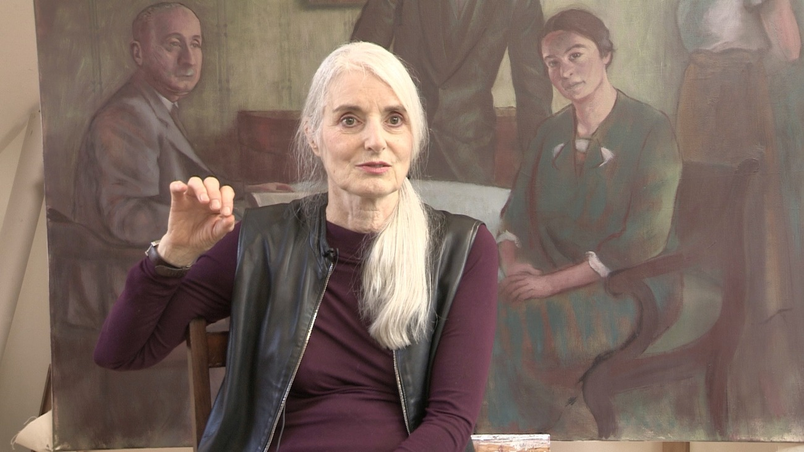
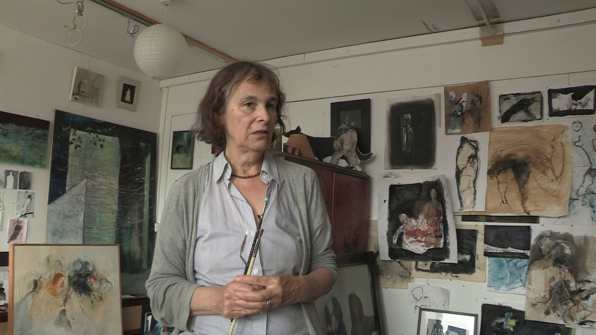
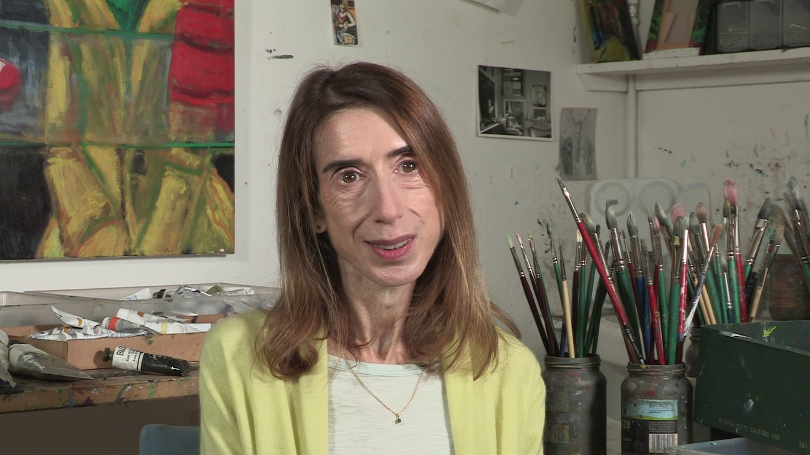
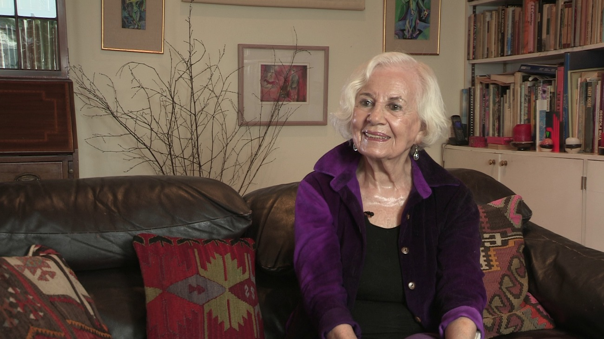
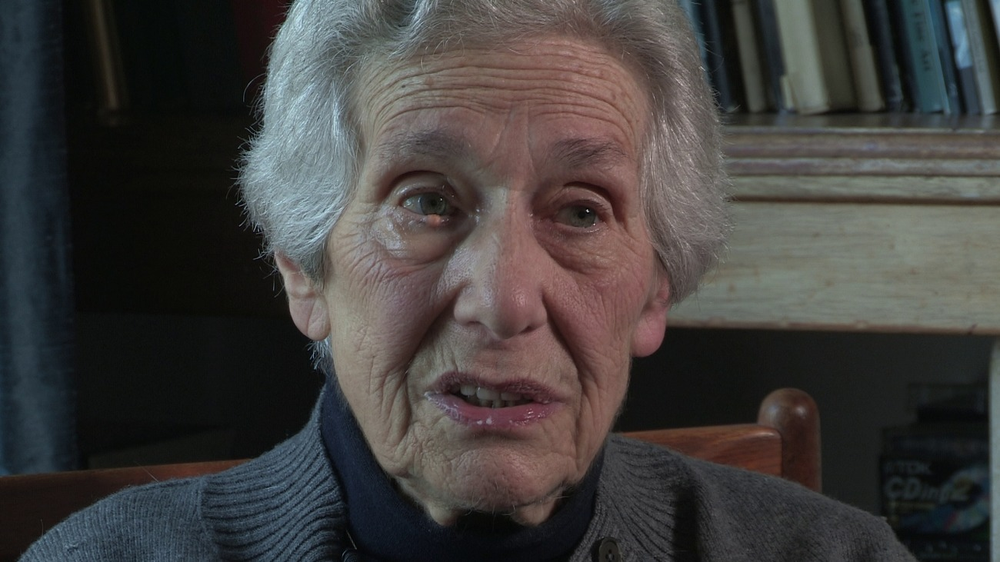
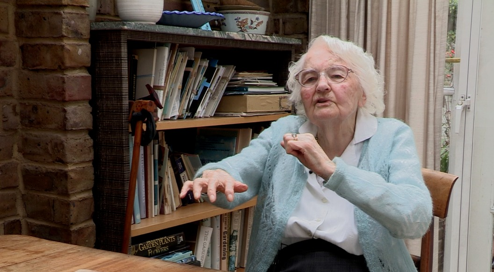

FRACTURED WORLDS
“Fractured Worlds is a series of documentary portraits exploring the lives of artists, designers, scientists and performers whose lives were transformed by exile from Nazi Europe.”

Barbara Loftus
A fine painter who lives in Brighton. Barabara’s work is a deeply-felt and personal expression of all her mother went through in surviving the Holocaust and the experience of other close relatives, who didn’t. Her mother was a girl of nine in Berlin at the time of Kristallnacht, but once in England she never talked about those experiences. Barbara’s father, a communist and strongly anti-Zionist, could not cope with her mother's Jewishness. “In the fifties”, Barbara says, “there was a complete silence about the experience of refugees”. So it was only when her mother was in her nineties, that the stories began to come out and, as they did, they transformed Barbara’s own life and work. “We were at home together……..just the two of us…..she was looking at the porcelain in the cabinet next to us and then she started to talk about the day the SA came to confiscate the porcelain and I was so …...shocked…..I just felt that I had a responsibility to do something with this… “…the image of the delicacy of the wrapping with tissue paper of the porcelain figures….the shepherd and the shepherdess ….. the dismantling of this bourgeois, typically assimilated, Jewish family life……… it had shadowed my mother's whole life”. In our interview, Barabara describes her experience in going to Berlin to find her mother’s house and talks of the minute details on pavements, on walls and in parks that are so poignantly reflected in her work.
View Film
Ruth Rix
Ruth Rix has a studio in Brighton where she works almost every day. Her painting, much of it on canvas, is exceptional and deserving of much wider recognition. Her themes - staircases, landings, shifting rooms, glimpses of huts in woods reveal her past as the child of refugees from Austria. Her father arrived in 1938 and her mother in 1939 on one of the last kindertransports. Ruth says “the thing about what happens in my paintings is there’s this element of fracture - a break, a line, which I put back to what did happen - things stopped. The blurred boundaries between my early memories as the child of refugees and the collective memory of the family. I tried to link the gaps due to separation, dispossession, deportation and death.”
Ruth studied in Vienna for two years “ something started to come together there and I began to recognise what was inspiring me at least, and where part of me belonged - but not completely”
Painting started early for Ruth “ when I was a year and a half I was scalded just down this side and I went to the John Radcliffe Hospital in Oxford where a Portuguese or Spanish surgeon saved my life. He treated burnt airmen and he had a new method and that was penicillin and he said to my mother “look she needs to go to a nursery school”. So my mother put me in a nursery school run by a Czech woman called Ulla and she said to my mother “the best thing is to put a paintbrush in her hand and she'll be alright” and that's when it started.
Seventy years later, Ruth’s body of work is a tangible, and uniquely individual, monument to the Jewish refugee experience.
View Film
Julie Held
Julie Held is a first-generation émigré of German Jewish parentage. Her father was born in Leipzig; her mother in Berlin. Both fled to England in the 1930s as refugees from Nazi Germany. Julie trained at the Camberwell School of Art and now teaches at the Prince’s Royal Drawing School. She has exhibited at the Royal Academy and in solo shows in Prague, Leipzig and Hamburg as well as in London.
“All émigrés must experience the dilemma of assimilation and the retention of identity” says Held. A dilemma that is reflected in Julie’s paintings of shops and shop windows which carry an explicit suggestion of inside and outside. But they also evoke her grandfather’s department store, known for its support of local people during the depression, but nevertheless ransacked during Kristallnacht. Shoes too are a recurring theme of Held’s: mixing memories of hours of shopping for shoes in Florence as a seven year old with ideas of role play and character change.
Julie’s interview reveals a passionate identification with her parents’ lives: her mother who died so young, and of her “wonderful, intellectually voracious” Jewish father, who encouraged by the lack of shoe laces in the Hutchinson Internment camp, went into the textile trade on his release and is her subject for many fine portraits
View Film
Ruth Posner
Born 20 April 1933 as Ruth Wajsberg. Ruth is a Polish Holocaust survivor and a former dancer, choreographer (17 years with London Contemporary Dance) and member of the Royal Shakespeare Company. Ruth has taught at Juilliard, RADA, LAMDA and the Central School. She was interviewed by Steven Spielberg and still pursues her second career as an actress. Ruth has not wanted to talk about her past until now. In our interview, she describes how at the age of nine she escaped from the Warsaw ghetto. She tells of having to pretend to be a “little catholic girl” for the next three years of the war - “the best acting of my career”. And Ruth goes on to recount the tragic story of discovering, many years later, how her parents, who had planned her escape from the Ghetto were themselves murdered at Treblinka.
View Film
Beate Planskoy
Beate came to Britain with her sister (Eva Frankfurther) in April 1939 aged nine. She is a distinguished medical scientist who pioneered the use of electrons in radiotherapy at the Middlesex Hospital. In her interview she talks graphically about growing up in Berlin and having to pass SAS guards every day on her way to her aunt’s school next door to Goebbel’s house. And how it may have been Magda, Goebbels’ wife, who tipped off her father the day before Kristallnacht. The underlying theme of many of these interviews is the very particular challenges Jewish women have had to face in building their lives and careers in postwar Britain. Beate tellingly and at times almost unbelievably recounts the difficulty of being a female scientist in British laboratories and hospitals in the 1950s and 1960s.
For her sister, the artist Eva Frankfurther, the challenges were ones of identity and belonging. Her mother died when she was only one and a half and had been pregnant with Eva when she discovered she had cancer. Eva trained at St Martin's School of Art. And among Frankfurther's fellow Jewish classmates were Frank Auerbach (also a refugee from Berlin) and Leon Kossoff. Auerbach recalled Frankfurther's work, even then, as 'full of feeling for people' and contemptuous of 'professional tricks or gloss'. Her tutor Bateson Mason, believed she used art 'primarily as a means of establishing contact with people, and not as an end in itself'. Frankfurther opted to live among the new immigrants from the West Indies and Ireland in the East End of London, while working at the Café Royal. In her interview, Beate describes the painful days leading up to Eva’s suicide at the age of 29.
View Film
Out of the Rubble — Anne Baer
Ann Baer was 105 years old, when she gave this interview. She is known for her works of historical fiction but in this film she tells the story of her husband, Bernhard Baer.
A German émigré, Baer used collotype printing machines dug from the rubble of post-war Berlin to create remarkable facsimile prints of contemporary artists’ work. He helped to make Ganymed Press pre-eminent among art publishers in Britain after the war.
View Film